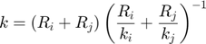
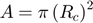
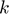
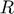
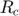
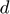
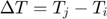

ConductionDirect_Pipe class
Contents
Description
This is a sub-class of the ConductionDirect class for the implementation of the Thermal Pipe direct heat conduction model.
This model assumes that heat is exchanged through a ficticious "thermal pipe" connecting both elements, and the discrete Fourier law governs the rate of heat transfer:

Where:


Notation:
: Thermal conductivity of particles i and j
: Radius of particles i and j
: Contact radius
: Distance between the center of the particles
: Temperature difference between elements i and j
References:
classdef ConductionDirect_Pipe < ConductionDirect
Constructor method
methods
function this = ConductionDirect_Pipe()
this = this@ConductionDirect(ConductionDirect.PIPE);
this = this.setDefaultProps();
end
end
Public methods: implementation of super-class declarations
methods
%------------------------------------------------------------------
function this = setDefaultProps(this)
end
%------------------------------------------------------------------
function this = setFixParams(this,~)
end
%------------------------------------------------------------------
function this = setCteParams(this,~)
end
%------------------------------------------------------------------
function this = evalHeatRate(this,int)
% Assumption: pipe cross-section area is a circle for spherical
% particles and a rectangle for cylindrical particles
switch int.elem1.type
case int.elem1.SPHERE
A = pi * int.kinemat.contact_radius^2;
case int.elem1.CYLINDER
A = 2 * int.kinemat.contact_radius * int.elem1.len;
end
this.total_hrate = A * int.avg_conduct * (int.elem2.temperature-int.elem1.temperature) / int.kinemat.distc;
end
end
end